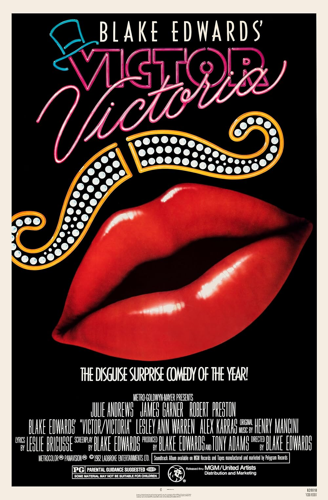

Victor/Victoria
55th Academy Awards
(Oscars 1983)
7 Nominations, 1 Award
| Watched |
| Nominations | ||
|---|---|---|
| Category | Nominees | Result |
| Actress in a Leading Role | Julie Andrews | Nominated |
| Actor in a Supporting Role | Robert Preston | Nominated |
| Actress in a Supporting Role | Lesley Ann Warren | Nominated |
| Writing (Screenplay Based on Material from Another Medium) | Blake Edwards | Nominated |
| Art Direction | Harry Cordwell, Rodger Maus, Tim Hutchinson, and William Craig Smith | Nominated |
| Costume Design | Patricia Norris | Nominated |
| Music (Original Song Score and Its Adaptation -or- Adaptation Score) | Henry Mancini and Leslie Bricusse | Won |